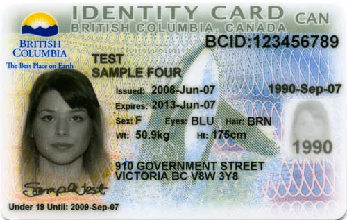

1. Get a BC ID (Service BC)

If you are living in British Columbia, getting a BC ID is very useful. A BC ID is an official photo identification card.
You can apply for a BC ID at Service BC
What to bring:
- Passport
- Study permit
- Home Address
Location: Service BC - Comox Valley
2500 Cliffe Ave, Courtenay, BC V9N 5M6Opening hours
- Sunday Closed
- Monday to friday- 9:00am to 4:30pm
- Saturday Closed